Métodos Convencionales
Análisis de diversos métodos de Detección de Cambios
Insumos
Para explorar diferentes métodos convencionales de detección de cambios, utilizaremos tres imágenes de muestra adquiridas en la provincia de Guizhou, China, por el sensor SAR COSMO-SkyMed en junio de 2016 y abril de 2017. Como se puede ver en la Figure 1, estas imágenes antes y después, sumadas al mapa de referencia, incluyen montañas y un río. Estos elementos fueron utilizados en la investigación de Zhang et al. (2020).
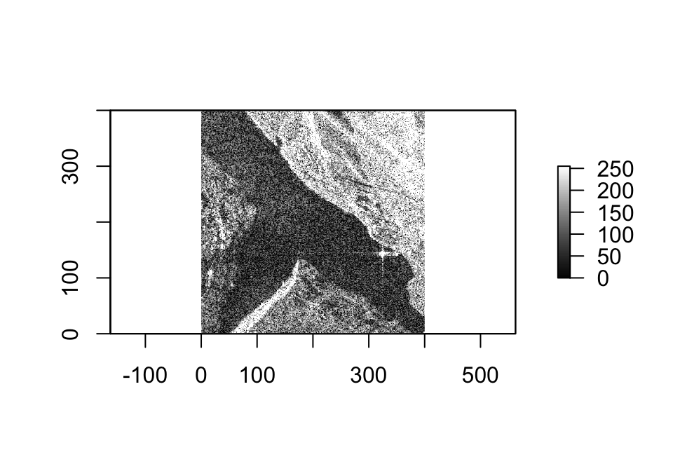
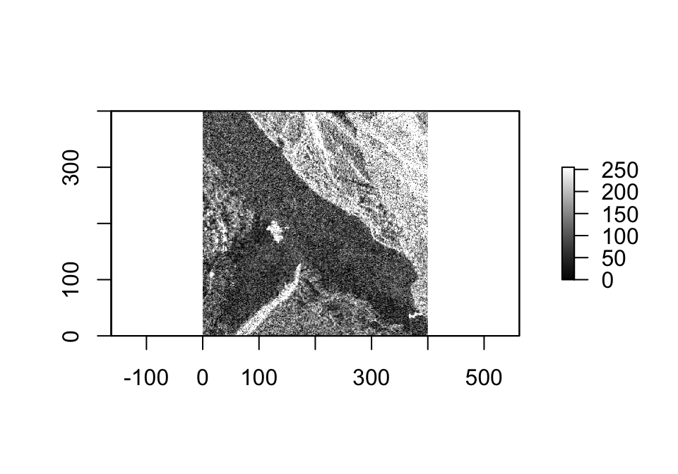
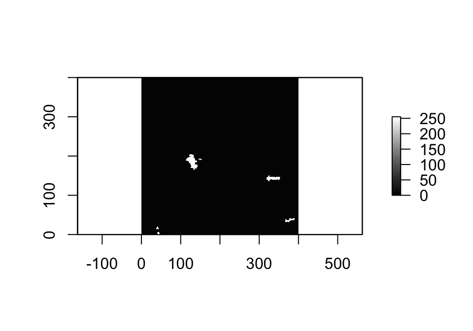
Diferencia Directa (DD)
El cálculo de la diferencia directa corresponde a la resta de ambas imágenes retornando sus valores absolutos de diferencia.
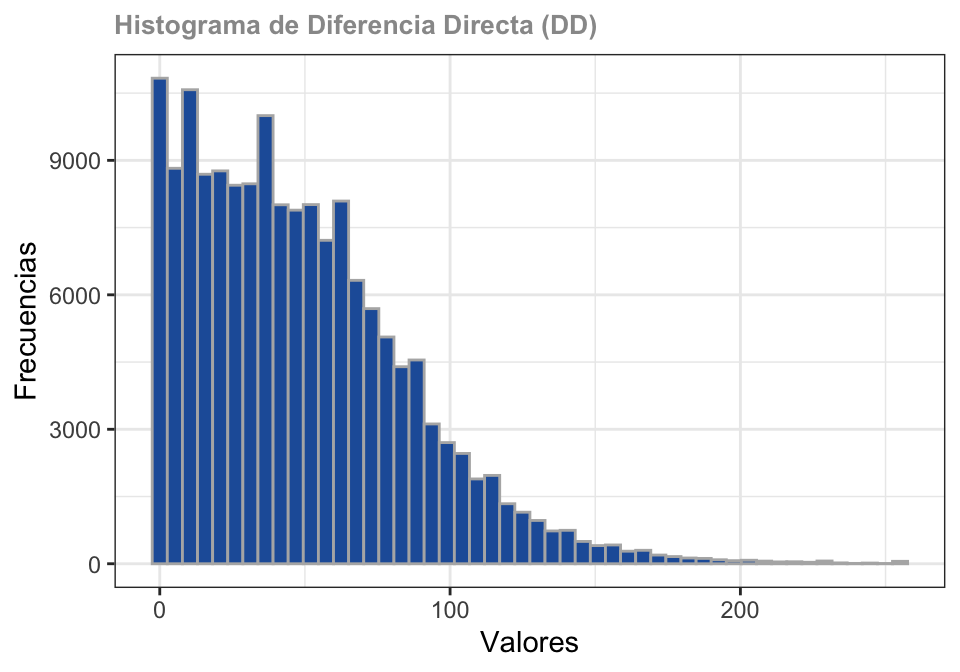
Diferencia Mejorada
El método propuesto para crear la imagen de diferencia mejorada combina la consistencia de la diferencia entre los píxeles individuales y sus vecindarios. Esto se logra mediante el uso de la relación logarítmica (LR) y la relación de verosimilitud logarítmica (LLR). La LR refleja la diferencia entre los píxeles individuales, mientras que la LLR refleja la diferencia entre los vecindarios.
Relación logarítmica (LR) (Dekker, 1998)
Refleja la diferencia entre los píxeles individuales. Esto se calcula utilizando la siguiente formula:
D_{LR} (i, j) = log_{10}\frac{I_2(i, j)}{I_1(i, j)}
Los elementos I_1 y I_2 corrponde a las imágenes.
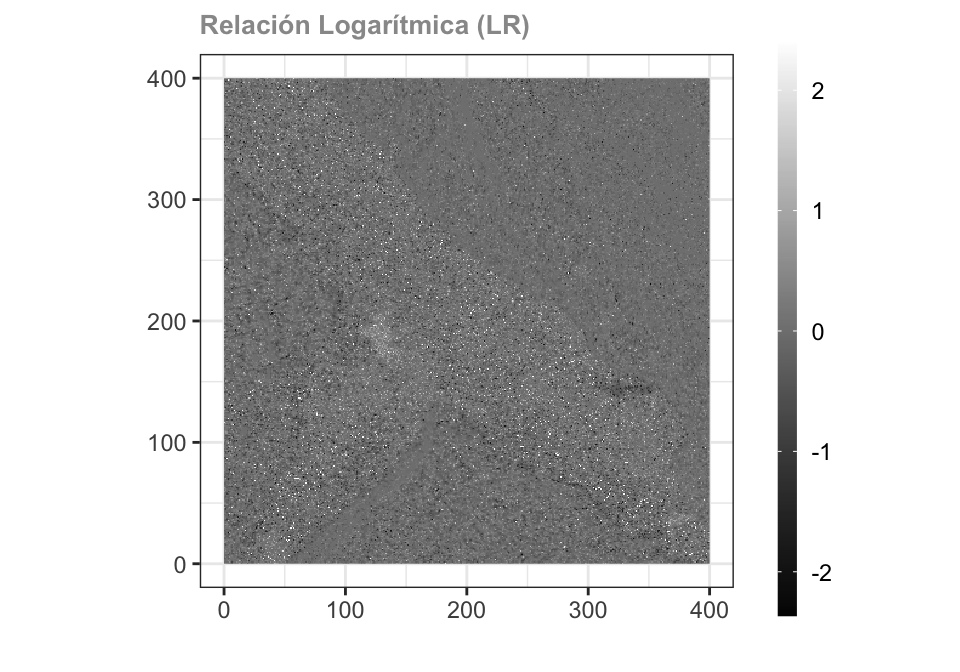
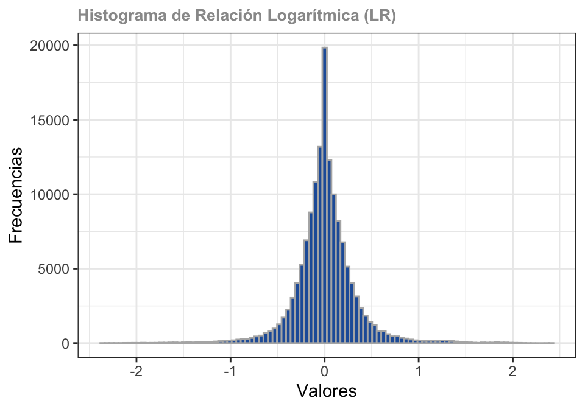
Relación de verosimilitud logarítmica (LLR) (Cui et al., 2019)
Refleja la diferencia entre los vecindarios. Se calcula utilizando las características estadísticas del vecindario del píxel para construir la relación de verosimilitud y se expresa con la siguiente ecuación:
D_{LLR}(i, j)= log_{10}\left(\frac{(\sum_{(m,n)\in\Omega{i,j}}I_1(m,n)+\sum_{(m,n)\in\Omega{i,j}}I_2(m,n))^2}{4\times \sum_{(m,n)\in\Omega{i,j}}I_1(m,n)\times\sum_{(m,n)\in\Omega{i,j}}I_2(m,n)}\right)
Donde:
\Omega_{i, j} es el vecindario de (i, j),
I{i,j(m,n)} es laintensidad de pixeles en \Omega_{i, j}.
I_{(m,n)} es el valor de píxel de la imagen original en la posición (m,n).
Se calcula utilizando las características estadísticas del vecindario del píxel para construir la relación de verosimilitud
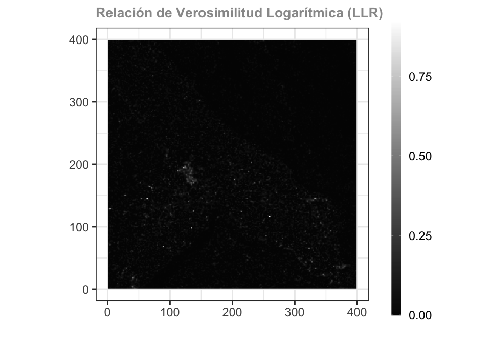
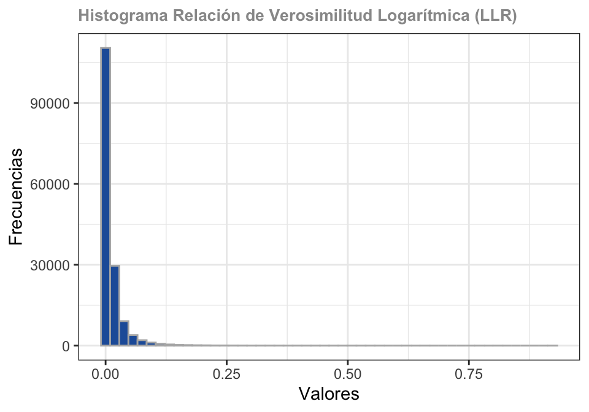
Enhanced difference image (EDI)
El método propuesto para crear la imagen de diferencia mejorada combina la consistencia de la diferencia entre los píxeles individuales y sus vecindarios. Esto se logra mediante el uso de la relación logarítmica (LR) y la relación de verosimilitud logarítmica (LLR). La LR refleja la diferencia entre los píxeles individuales, mientras que la LLR refleja la diferencia entre los vecindarios.
D(i, j) = D{LR} (i, j) \times D_{LLR} (i, j)
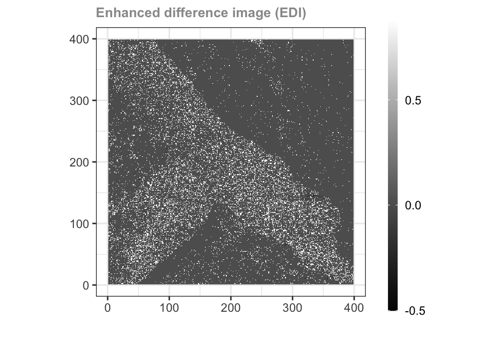
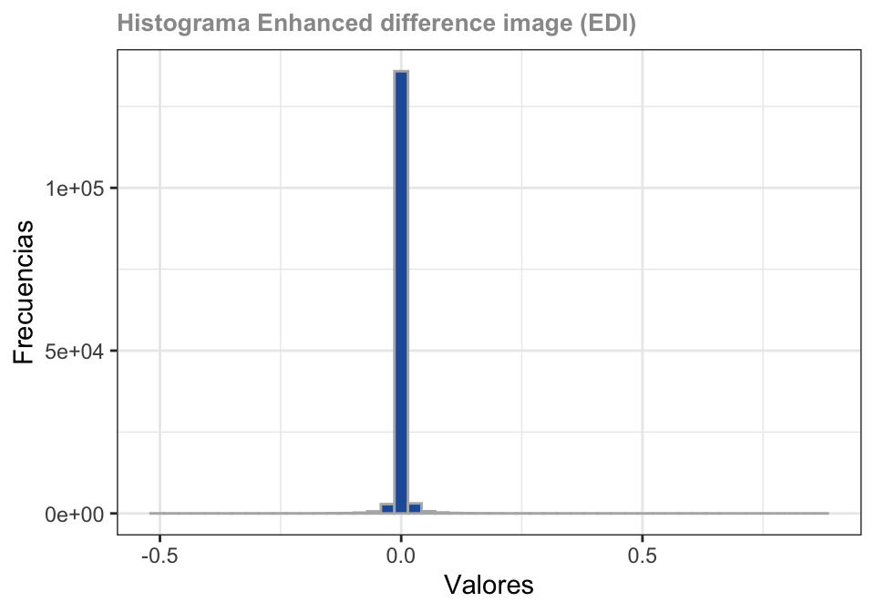
Triangular Threshold Segmentation
El método de segmentación de umbral triangular se basa en la forma única del histograma DI y utiliza un método de Douglas-Peucker (Douglas y Peucker, 1973) para segmentar los datos en diferentes clases. Esto se logra mediante el uso de los diferentes niveles de gris y sus frecuencias correspondientes.
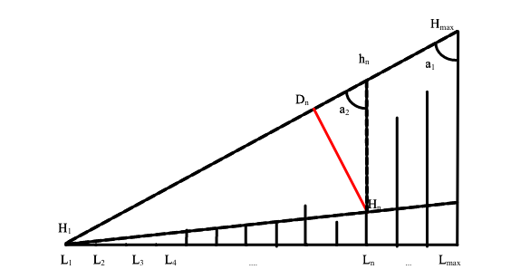
TODO: agregar ecuación
Este método consiste en:
- Calcular el histograma de la imagen DI.
- Calcular el valor umbral inicial (T) como el punto medio entre el valor mínimo y máximo de la imagen DI.
- Inicializar una lista vacía para almacenar las clases resultantes.
- Repetir los pasos 5-7 hasta que el valor umbral no cambie significativamente.
- Calcular las medias de las clases formadas por los píxeles con valores por encima y por debajo del umbral actual.
- Calcular el nuevo valor umbral como el promedio entre las medias de las clases.
- Actualizar las clases resultantes dividiendo los píxeles en dos grupos: aquellos con valores por encima del umbral y aquellos con valores por debajo del umbral.
- Devolver las clases resultantes.
Método Douglas-Peucker a imagen Diferencia Mejorada (EDI)
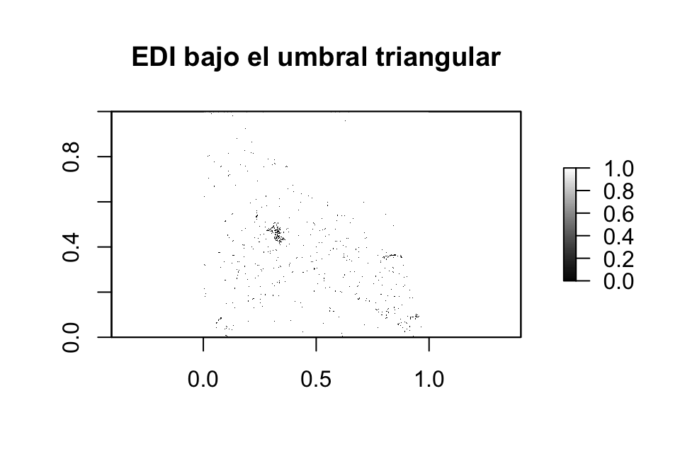
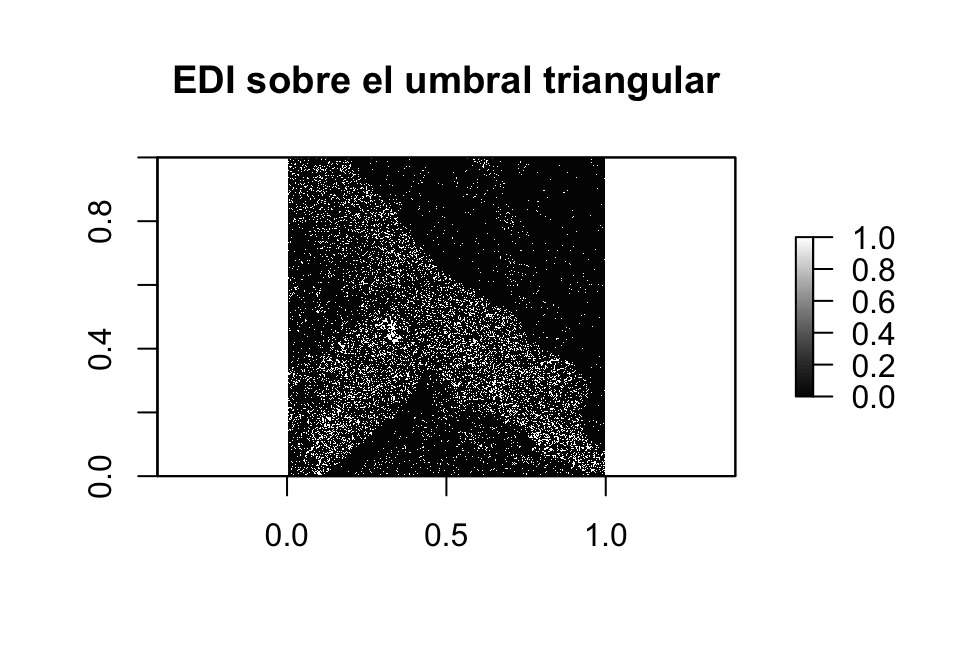
Método Douglas-Peucker a imagen Diferencia Directa (DDI)
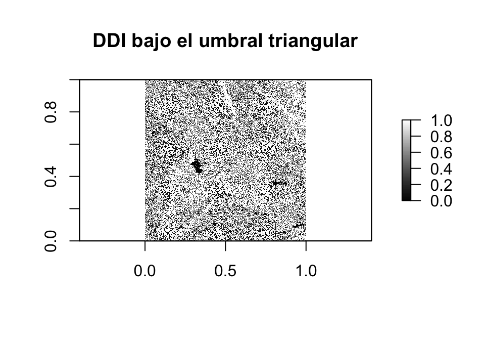
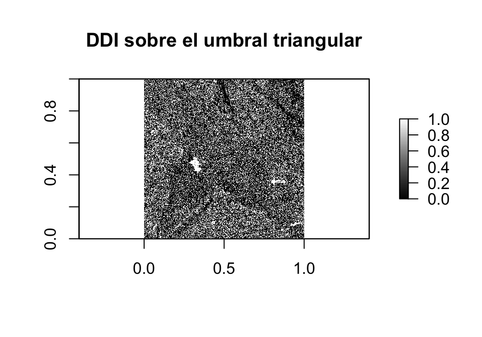
Log Mean Ratio (LMR)
El operador LMR se define como la relación entre la media logarítmica de dos imágenes, I_1 y I_2. Esta relación se calcula para cada píxel (i,j) en el vecindario \Omega.
D_{LMR}(i, j)= log(max(\frac{\mu(\Omega_{I_1})}{\mu(\Omega_{I_2})}, \frac{\mu(\Omega_{I_2})}{\mu(\Omega_{I_1})}))
Donde \mu(\Omega_{I_1}) y \mu(\Omega_{I_2}) presenta el promedio del vecindario en I_1 y I_2, respectivamente.
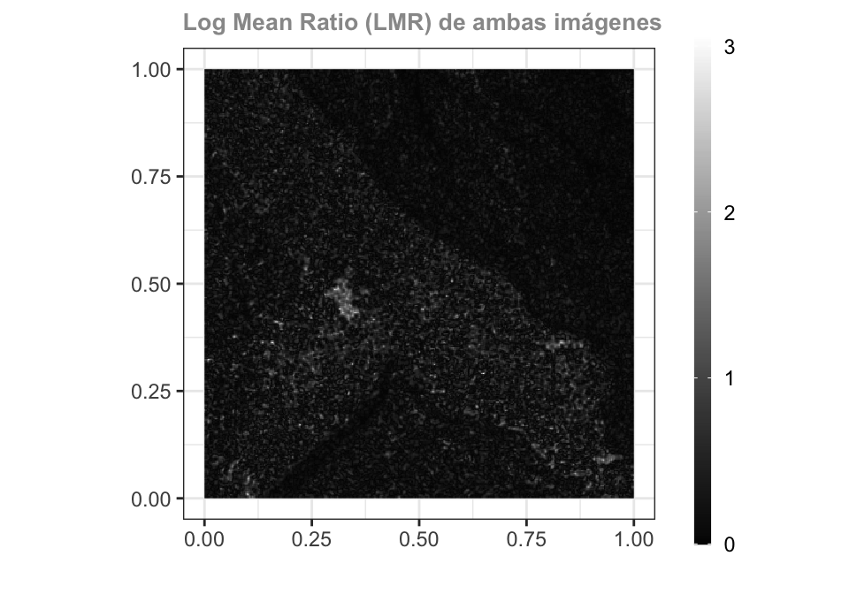
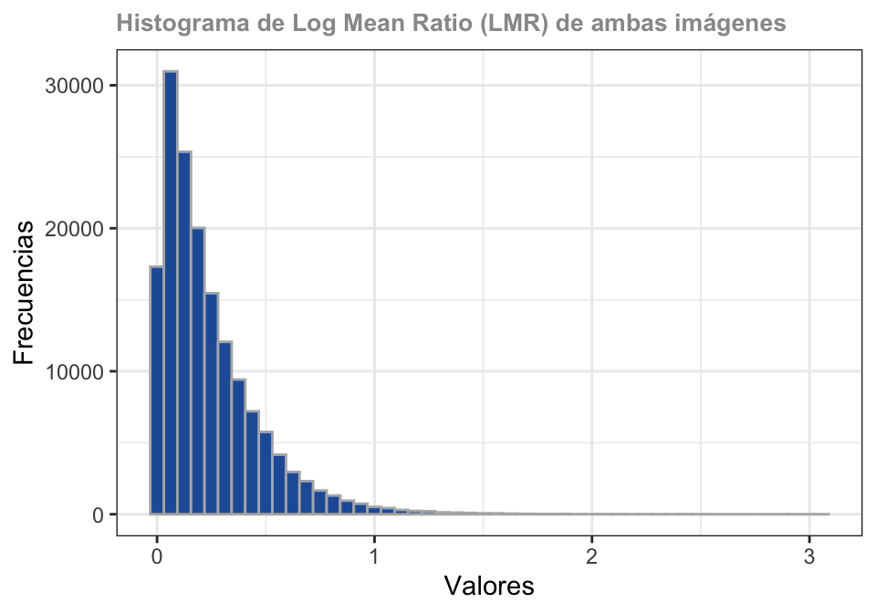
PCA k-means
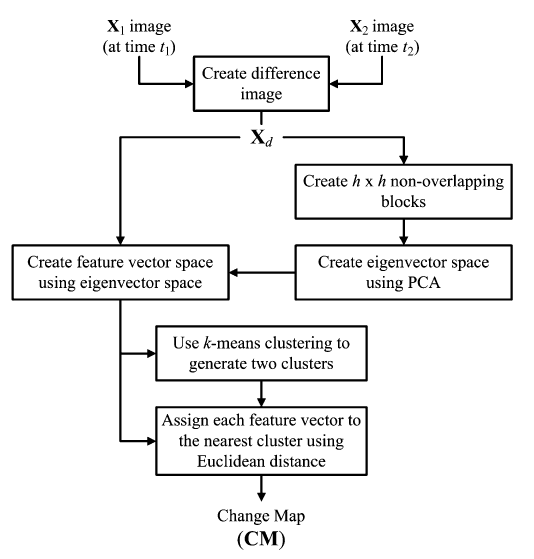
PCA-Kmeans Celik (2009) divide la imagen de diferencia en bloques no solapados. Los vectores propios ortonormales se extraen mediante PCA del conjunto de bloques no solapados para crear un espacio de vectores propios. Cada píxel de la imagen de diferencia se representa con un vector de características S-dimensional que es la proyección de los datos de la imagen de diferencia en el espacio de vectores propios generado. La detección de cambios se consigue particionando el espacio de vectores de características en dos clusters mediante k-means.
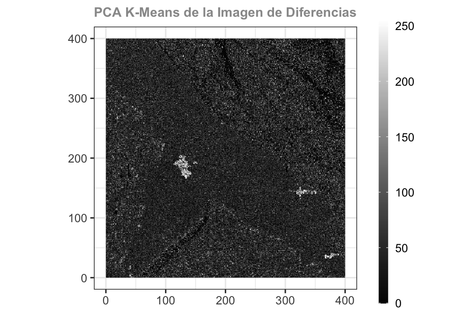
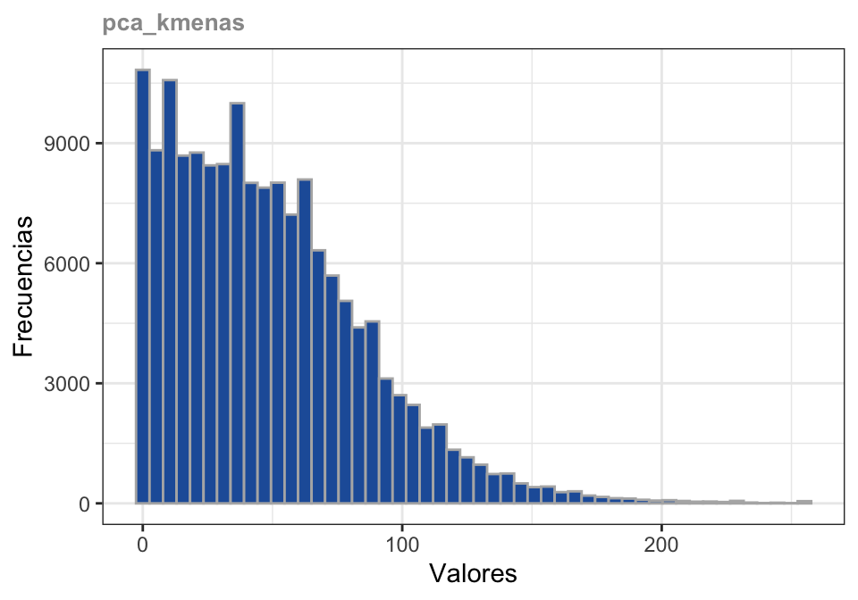
Multi-hierarchical FCM
implementar a caso de uso, codigo agregar jeraquizado